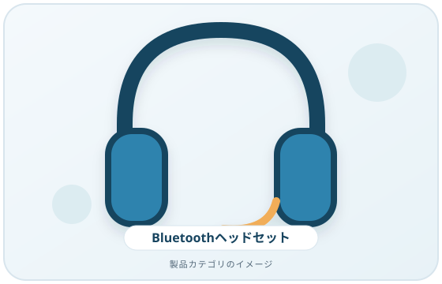
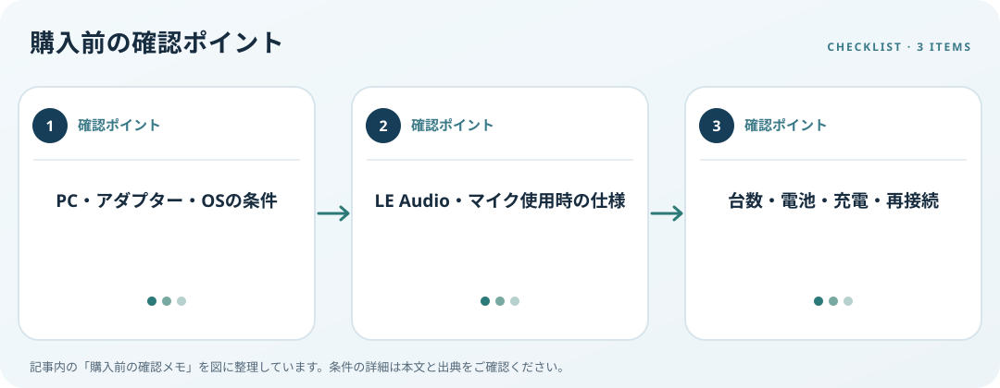

PC側のBluetooth、通話時の音声仕様、接続台数、充電方法を照合します。この記事では仕様の確認順を整理します。
画像・ボタンはAmazonアソシエイトリンクです。適格購入により紹介料を得る場合があります。

Amazon.co.jpで「Bluetooth ヘッドセット PC マイク」を探す ↗

PCのBluetooth対応を調べる
Windows PCにBluetooth機能があるか仕様書と設定画面で確認します。Microsoftは非搭載PCにUSBアダプターを追加する方法を案内していますが、そのアダプターとOSの対応も確認が必要です。スマートフォンとPCを併用する場合は、接続台数や切替方法を決めてから選びます。
通話時の仕様を照合
Bluetoothの規格名だけで通話品質を判断せず、PCとヘッドセット双方が対応する機能やドライバー条件を確認します。Windows 11のLE Audio機能には対応PC、アクセサリー、ドライバー等が必要です。マイク使用時に再生モードがどうなるか、会議アプリも含めて見ましょう。
装着・電池・再接続を見る
装着方式、重量、マイク位置、連続時間の測定条件、充電端子をメーカー仕様で比較します。残量表示は機器が対応する場合に限られます。再接続や再ペアリング、ファームウェア更新の手順も確認し、表示がない機能を備えると決めつけないでください。
購入前の確認メモ
- PC・アダプター・OSの条件
- LE Audio・マイク使用時の仕様
- 台数・電池・充電・再接続
この記事は出典の公開情報を購入前の確認項目に整理したもので、特定商品の使用・実測・レビュー・ランキング・価格・在庫の調査は行っていません。購入時には利用機器メーカーの最新仕様をご確認ください。
出典
- Pair a Bluetooth device — Microsoft（確認日: 2026-10-10）
- Bluetooth LE Audio settings — Microsoft（確認日: 2026-10-10）
- Set up and test microphones — Microsoft（確認日: 2026-10-10）